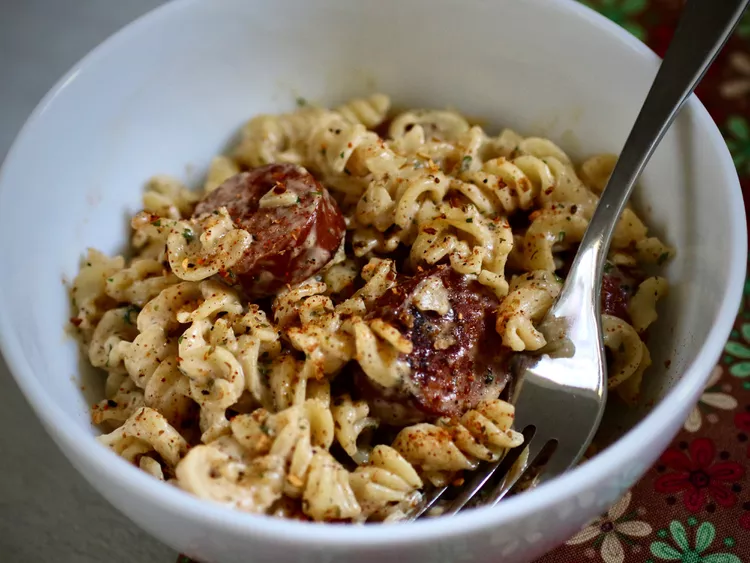

VOODOO PASTA
Back to Home Page

Description
Voodoo pasta is a bold and spicy Cajun-inspired dish packed with flavor and attitude. Typically made with blackened chicken, shrimp, or sausage, this creamy pasta features a rich sauce infused with Cajun spices, garlic, and sometimes a hint of heat from jalapeños or hot sauce. Bell peppers and onions add a sweet crunch, balancing out the spiciness for a mouthwatering Southern-style meal that's both comforting and exciting.
Details About
- Prep Time: 10 mins
- Cook Time: 20 mins
- Total Time: 30 mins
- Servings: 6
- Yield: 10 1/2 cups
Ingredients
- 1 (16 ounce) package uncooked fusilli pasta
- 1 (16 ounce) package Hillshire Farm® Smoked Sausage
- 1 teaspoon blackened or Cajun seasoning
- 1 (15 ounce) jar Alfredo sauce
- 1 cup chopped fresh parsley
- 1 teaspoon hot sauce, or to taste
Steps
- Step 1.
Cook pasta according to package directions; drain.
- Step 2.
While pasta is cooking, cut sausage into 1/4-inch-thick slices. Place in a bowl and sprinkle with seasoning; toss lightly to evenly coat.
- Step 3.
Heat a large skillet over medium-high heat for 3 minutes. Add sausage; cook and stir for 3 to 4 minutes or until lightly browned. Stir in Alfredo sauce, parsley, and hot sauce to taste; heat through.
- Step 4.
Pour sauce over pasta and toss until well coated. Serve immediately.